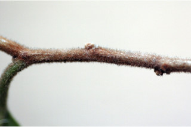
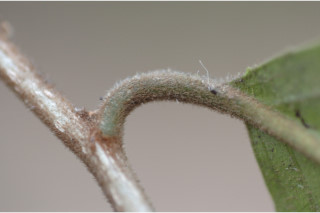
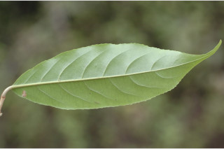
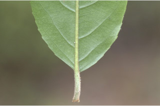
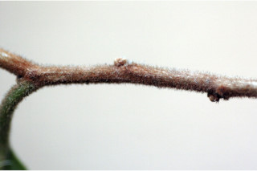
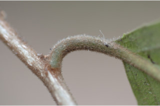
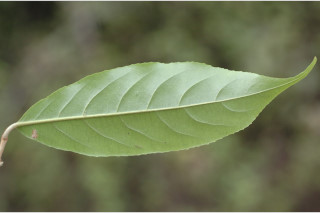
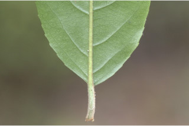

Small trees up to 5 m tall.
5 ಮೀ. ಎತ್ತರದವರೆಗಿನ ಸಣ್ಣ ಗಾತ್ರದ ಮರಗಳು.
Small trees up to 5 m tall.
சிறியமரங்கள் 5 மீ. உயரம் வரை வளரக்கூடியது.
Young branchlets terete, fulvous tomentose.
ಕಿರುಕೊಂಬೆಗಳು ದುಂಡಾಗಿದ್ದು ನಸುಗೆಂಪಿನಿಂದ ಕೂಡಿದ ಹಳದಿ ಬಣ್ಣದ ಮೃದುಗೂದಲಿನ ಸಮೇತವಿರುತ್ತವೆ.
Young branchlets terete, fulvous tomentose.
சிறியநுனிக்கிளைகள் குறுக்குவெட்டுத் தோற்றத்தில் வளையமானது, உரோமங்களுடையது.
Leaves simple, alternate, distichous; stipule caducous; petiole 0.6-1.2 cm long, canaliculate, fulvous tomentose; lamina 5-15 x 2.5-5 cm, narrow elliptic to elliptic-oblong, apex gradually acuminate, base acute or cuneate, margin serrate, membranous, fulvous pubescent on midrib and nerves beneath, sparsely pubescent on intercostals; midrib flat above, slightly pubescent at base; secondary_nerves 8-12 pairs; tertiary_nerves broadly reticulate.
ಎಲೆಗಳು ಸರಳವಾಗಿದ್ದುಪರ್ಯಾಯ ಜೋಡನಾ ವ್ಯವಸ್ಥೆಯಲ್ಲಿದ್ದು ಕಾಂಡದ ಎರಡೂ ಕಡೆ ಎದುರು ಬದರಿನ ಲಂಬ ಸಾಲಿನಲ್ಲಿರುತ್ತವೆ;ಕಾವಿನೆಲೆಗಳು ಅಸ್ಥಿರವಾಗಿರುತ್ತವೆ;ತೊಟ್ಟುಗಳು 0.6 ರಿಂದ 1.2 ಸೆಂ.ಮೀ. ಉದ್ದವಿದ್ದು ಕಾಲುವೆಗೆರೆ ಸಮೇತವಿದ್ದು ನಸುಗೆಂಪಿನಿಂದ ಕೂಡಿದ ಹಳದಿ ಬಣ್ಣದ ಮೃದುಗೂದಲಿಂದ ಕೂಡಿರುತ್ತವೆ; ಪತ್ರಗಳು 5 – 15 X 2.5 – 5 ಸೆಂ.ಮೀ. ಗಾತ್ರವಿದ್ದು ಸಂಕುಚಿತ ಅಂಡವೃತ್ತದಿಂದ ಅಂಡವೃತ್ತ – ಚತುರಸ್ರದ ಆಕಾರ ಹೊಂದಿದ್ದು ಹಂತ ಹಂತವಾಗಿ ಕ್ರಮೇಣ ಚೂಪಾಗುವ ತುದಿ,ಚೂಪಾದ ಅಥವಾ ಬೆಣೆಯಾಕಾರದ ಬುಡ ,ಗರಗಸ ದಂತಿತವಾದ ಅಂಚು,ತೆಳು ಪದರದಂತಹ ಮೇಲ್ಮೈ ಹೊಂದಿರುತ್ತವೆ, ತಳಬಾಗದ ಮಧ್ಯನಾಳ ಮತ್ತು ಇತರೆ ನಾಳಗಳು ನಸುಗೆಂಪಿನಿಂದ ಕೂಡಿದ ಹಳದಿ ಬಣ್ಣದ ಮೃದುಗೂದಲಿಂದ ಕೂಡಿರುತ್ತವೆ,ಅಂತರ ನಡು ನಾಳಗಳು ವಿರಳವಾದ ದಟ್ಟ ಮೃದು ತುಪ್ಪಳದಿಂದ ಕೂಡಿರುತ್ತವೆ ;ಮಧ್ಯ ನಾಳ ಮೇಲ್ಭಾಗದಲ್ಲಿ ಚಪ್ಪಟೆಯಾಗಿರುತ್ತದೆ; ಎರಡನೇ ದರ್ಜೆಯ ನಾಳಗಳು 8 ರಿಂದ 12 ಜೋಡಿಗಳಿರುತ್ತವೆ;ಮೂರನೇ ದರ್ಜೆಯ ನಾಳಗಳು ವಿಶಾಲ ಜಾಲಬಂಧ ನಾಳವಿನ್ಯಾಸದಲ್ಲಿರುವ ಮಾದರಿಯಲ್ಲಿರುತ್ತವೆ.
Leaves simple, alternate, distichous; stipule caducous; petiole 0.6-1.2 cm long, canaliculate, fulvous tomentose; lamina 5-15 x 2.5-5 cm, narrow elliptic to elliptic-oblong, apex gradually acuminate, base acute or cuneate, margin serrate, membranous, fulvous pubescent on midrib and nerves beneath, sparsely pubescent on intercostals; midrib flat above, slightly pubescent at base; secondary_nerves 8-12 pairs; tertiary_nerves broadly reticulate.
இலைகள் தனித்தவை, மாற்றுஅடுக்கமானவை, இருநெடுக்கு வரிசையிலையடுக்கம் (டைஸ்டிக்கஸ்); இலையடிச்செதில் எளிதில் உதிரக்கூடியவை ; இலைக்காம்பு 0.6-1.2 செ.மீ. நீளமானது, குறுக்குவெட்டுத் தோற்றத்தில் கேனாலிகுலேட், உரோமங்களுடையது; இலை அலகு 5-15 X 2.5-5 செ.மீ., குறுகிய நீள்வட்ட வடிவானது முதல் நீள்வட்ட வடிவானது-நீள்சதுர வடிவானது, அலகின் நுனி சீராக அதிக்கூரியது, அலகின் தளம் கூரியது அல்லது ஆப்பு வடிவானது, அலகின் விளிம்பு ரம்ப பற்களுடையது, ஜவ்வு போன்றது, கீழ்பரப்பில் மையநரம்பு மற்றும் இரண்டாம் நிலை நரம்புகளில் உரோமங்களுடையது மற்றும் நரம்புகளுக்கிடையே குறைந்தளவு உரோமங்களுடையது; மையநரம்பு மேற்பரப்பில் அலகின் பரப்பிற்கு சமமானது, தளத்தில் குறைந்தளவு உரோமங்களுடையது; இரண்டாம் நிலை நரம்புகள் 8-12 ஜோடிகள்; மூன்றாம் நிலை நரம்புகள் அகன்ற வலைப்பின்னல் போன்றவை.
Flowers in axillary clusters, pubescent.
ಪುಷ್ಪಮಂಜರಿಗಳು ಅಕ್ಷಾಕಂಕುಳಿನಲ್ಲಿರುವ ಗುಚ್ಛಗಳಲ್ಲಿರುತ್ತವೆ ಹಾಗೂ ದಟ್ಟ ಮೃದು ತುಪ್ಪಳದಿಂದ ಕೂಡಿರುತ್ತವೆ.
Flowers in axillary clusters, pubescent.
மலர்கள் இலைக்கோணங்களில் கூட்டமாக காணப்படுபவை, உரோமங்களுடையது.
Capsule, ellipsoid, to 1 cm long, orange when ripe; seeds with red aril.
ಸಂಪುಟ ಫಲಗಳು ಅಂಡವೃತ್ತದ ಆಕಾರದಲ್ಲಿದ್ದು 1 ಸೆಂ.ಮೀ.ವರೆಗಿನ ಉದ್ದ ಹೊಂದಿರುತ್ತವೆ ಮತ್ತು ಕಿತ್ತಳೆ ಬಣ್ಣದಲ್ಲಿರುತ್ತವೆ; ಬೀಜಗಳು ಹೆಚ್ಚಿನ ಸಂಖ್ಯೆಯಲ್ಲಿದ್ದು ಕೆಂಪು ಬಣ್ಣದ ಪತ್ರೆ ಸಮೇತವಾಗಿರುತ್ತವೆ.
Capsule, ellipsoid, to 1 cm long, orange when ripe; seeds with red aril.
வெடிகனி (கேப்சியூல்), நீள்வட்ட வடிவானது, முதல் 1 செ.மீ. நீளமானது, கனியும் போது ஆரஞ்ச் நிறமானது; விதைகள் சிவப்பு நிற பத்ரி (ஏரில்) உடையது.

 






